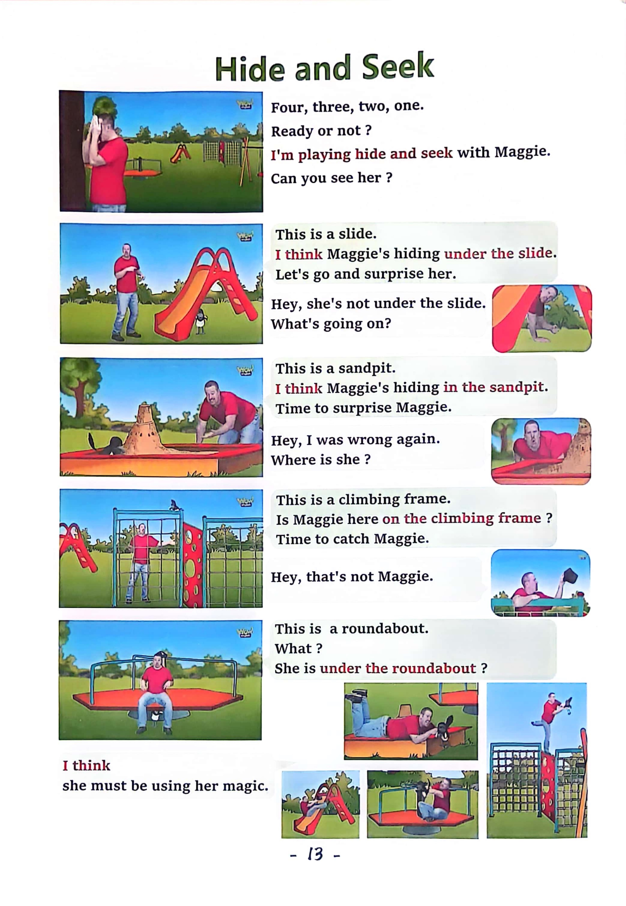

Day 13
Unit 5 · story
教材重点
教材重点依据网盘文件“第四级绿色每日打卡全.pdf”，PDF 第 15 页对应 Day 13；以原图为准，避免对图片文字做不可靠的自动识别。
网盘教材重点原图 · PDF 第 15 页对应 Day 13

Unit 5 · story · 6–7岁
look · say · go · play
Hello, hello, my name's Steve.
台词本为机器转写，可能存在识别误差；不等同于视频逐字原声。
详细内容
Part 1 核心词汇
必须掌握 · 4 个Part 2 跟读句型与句型拓展
左侧保留台词本原句，右侧为替换练习；拓展内容不是视频逐字台词。
Hello, hello, my name's Steve.
It's time to play. It's time to play in English.
Arms, legs.
Hands, feet and head.
Stay yes, madam, oh, no, maggie, I don't want to play today. I'm reading my book.
Part 3 台词本全文
来源：第4级台词本 · 013.Wow!Green - Unit 5 story1.pdf。以下保留网盘 PDF 的机器转写文本，仅清理了文件路径页眉和空行。
Hello, hello, my name's Steve.
It's time to play. It's time to play in English.
Arms, legs.
Hands, feet and head.
Stay yes, madam, oh, no, maggie, I don't want to play today. I'm reading my book.
Hello, boys and girls, hi, I'm having a lazy day.
Reading my book on the sofa. No, hey,
Maggie, she's got my foot, oh, my foot, my foot.
She's got my foot, my foot.
Oh, how did Maggie stretch my foot? Oh, it's not rubber.
Oh, but what is it.
Say it with me, it's a foot, it's a foot, it's a foot. What is it.
It's a foot, it's a foot, it's a foot, that's right, but hey, I've got two feet, look one.
Two, so what are they say with me They are feet, they are feet, they are feet, what are they They are
feet, they are feet, they are feet.
That's right, how did Maggie stretch my foot What a naughty, naughty bird.
Oh, hey, look, look, monkeys got my hand. She's stretching my hand.
Go, maggie, stop it and let go of my hand, oh, hey,
How did Maggie stretch my hand?
Oh, this is a hand, so what is it Say it with me.
It's a hand, it's a hand, it's a hand, what is it It's a hand, it's a hand, it's a hand, yeah, but hey, I've got.
Two hands.
So what are they They are hands, they are hands, they are hands, what are they They are hands they
are hands, they are hands.
But what's going on I know Maggie wants to play, but.
I just want to relax on the sofa.
Oh hey, oh, maggie, look, maggie's got my arms.
Stop it, maggie, don't stretch my arm, oh, just let go, you naughty naughty bird.
Hey,
How did Maggie stretch my arm? Oh, it's not rubber.
But it is my arm, so say it with me.
/
-
/4/013.Wow!Green - Unit 5 story1.txt[2022/3/29
星期二
6:49:29]
It's an arm, it's an arm, it's an arm, what is it It's an arm, it's an arm, it's an arm, yeah,
But look.
I've got two arms.
So what are they say with me They are arms, they are arms, they are arms, what are they They are arms
they are arms, they are arms.
That's right, oh dear, maggie is being very naughty today. Where is she.
Hello, maggie, hey, look, maggie, stretching my head.
Oh, how, maggie let go of my head, oh, you naughty, naughty bird, oh, oh,
Oh, oh, my head feels strange.
Oh dear,
Look, this is my head. What is it say it with me it's a head, it's a head, it's a head, well done, and again,
what is it.
It's ahead. It's ahead. It's ahead.
I've only got one head, oh, on this head needs a lie down, oh dear,
I feel very strange, oh, maggie, hey, oh, no, maggie, stopping it. Look.
Maggie, stretching my leg, call Maggie, leave me alone, leave me alone, let go.
My leg.
Let's go with my leg. Let go.
My leg, oh, oh, oh, my leg is okay.
Oh,
It was just a dream. My leg isn't rubber.
No, hey, what is it say it with me, it's a leg, it's a leg, it's a leg. What is it.
It's a leg, it's a leg, it's a leg here, oh, but hey.
I've got two legs, so what are they say with me They are legs, they are legs, they are legs. What are
they.
They are legs, they are legs, they are legs. Yeah, hi, steve, come on, let's play, okay, maggie,
Come on, let's play, see you next time. Bye for now, bye bye, see you.